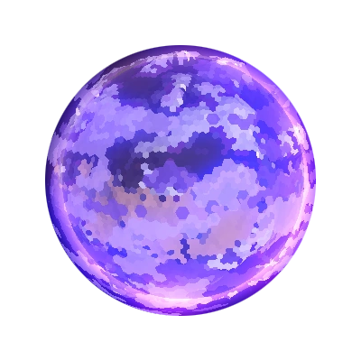
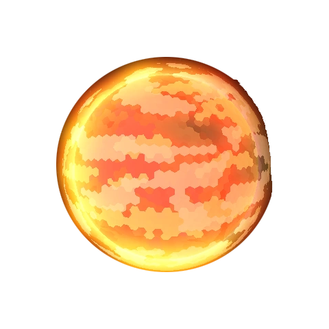

В игре присутствуют две основные планеты:
Серпуло — первая и самая известная планета в Mindustry. Именно с неё начинается знакомство игроков с миром автоматизации, добычи ресурсов и обороны базы. Планета сочетает в себе разнообразные биомы: снежные пустыни, леса, руины старых заводов и заражённые спорами территории. Несмотря на относительно спокойное начало, со временем Серпуло превращается в арену масштабной войны машин.
Основой игрового процесса на Серпуло является строительство огромной промышленной системы. Игрок добывает медь, свинец, титан и другие ресурсы, создаёт фабрики, линии конвейеров и мощные оборонительные комплексы. Здесь особенно важны грамотная логистика и постепенное развитие технологий.
Лор планеты намекает на древний конфликт и катастрофу, связанную с распространением опасных спор. Многие территории представляют собой руины старой цивилизации, а фракции продолжают бесконечную борьбу за контроль над ресурсами. Серпуло считается более свободной и масштабной планетой по сравнению с Эрекиром, так как игрок может выбирать разные направления развития и исследовать множество секторов.

Эрекир — суровая и раскалённая планета, где выживание зависит от точности, энергии и технологий. В отличие от зелёных и относительно привычных пейзажей Серпуло, Эрекир покрыт лавовыми морями, горячими пустошами и залежами редких минералов. Здесь игроку приходится постоянно контролировать производство энергии, строить сложные логистические цепочки и быстро реагировать на атаки врагов.
Главная особенность Эрекира — его агрессивный стиль игры. Противники не ждут начала волны, а непрерывно производят юнитов и отправляют их в бой. Поэтому игрок должен не только защищаться, но и активно атаковать базы врага. На планете используются уникальные ресурсы, такие как бериллий и вольфрам, а также необычные вещества вроде аркицита и неоплазмы. Всё это создаёт атмосферу технологической войны на чужом и опасном мире.
Эрекир появился в версии 7.0 и стал совершенно новым этапом развития Mindustry. Многие игроки считают его более сложной и тактической кампанией, где каждая ошибка может привести к уничтожению базы.
